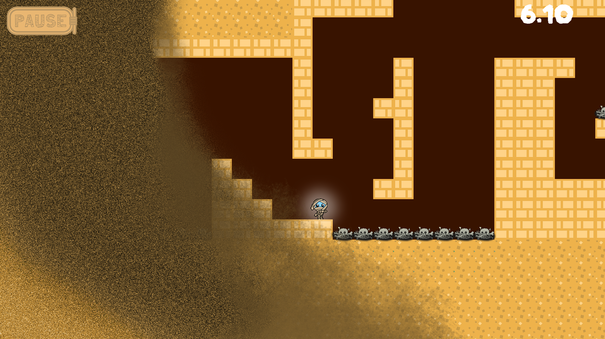

Afnut's Awakening
Projet étudiant : 3 mois
Détails techniques
Genre : Platformer 2D
Moteur : Phaser
Production : 3 mois
Équipe : Solo
Rôles :
• Game design
• Programmation gameplay
• VFX design
• Sound design
Moteur : Phaser
Production : 3 mois
Équipe : Solo
Rôles :
• Game design
• Programmation gameplay
• VFX design
• Sound design
Logiciels utilisés
Phaser (JavaScript), Tiled, PhotoShop
Pitch
Incarnez Afnut, une momie qu'un explorateur imprudent a réveillée de son repos éternel ! Pour y revenir, elle doit récupérer le sceptre qu'il lui a dérobé. Seulement, la larcin a activé les pièges de la pyramide. Saurez-vous distancer la vague de sable meutrière dans ce platformer 2D endiablé ?


Processus de création
Intention
L’objectif du projet était de réaliser un platformer 2D sur Phaser (un moteur de jeu JavaScript) sur une période de deux mois. En tant qu’amatrice de metroidvania, j’ai voulu recréer la sensation d’urgence et de flow transmise dans les séquences de fuite des jeux Ori (Moon Studios).
Piliers dégagés
Il a semblé évident très tôt dans le processus de pré-production qu’il me serait impossible de transmettre l’intégralité de l’expérience d’un metroidvania en un temps de production aussi court. J'ai alors défini les piliers qui constituaient pour moi une expérience au plus proche de l'intention tout en minimisant les risques de scope :
• Platforming rapide
• Upgrades incrémentales
• Dynamique de Die & Retry
• Platforming rapide
• Upgrades incrémentales
• Dynamique de Die & Retry
Prototypage
Mes piliers établis, il était temps pour moi de définir le core gameplay. À ce stade, j’imaginais le jeu comme un long couloir où le joueur serait traqué par un mur. Je n’avais pas encore d’idée d’environnement ou de lore, mais à la lumière de mes capacités de dessins limitées, j’ai pensé que prendre une approche bottom-up (concevoir les mécaniques dans un premier temps, puis m’occuper ensuite de l’habillage thématique) était plus sécurisant pour le produit final.
La première mécanique à définir, et la plus évidente, était le saut. Elle me semblait essentielle à une expérience de platforming (bien que j’aimerais un jour prendre le temps de me pencher sur un platformer sans saut !). Déboucher sur l’obtention du double saut m’a semblé être la continuité naturelle de cette mécanique. J’ai vite ajouté le double saut à la liste des mécaniques que je devrais prototyper rapidement pour que le ressenti en soit impeccable.
.
.
.
La première mécanique à définir, et la plus évidente, était le saut. Elle me semblait essentielle à une expérience de platforming (bien que j’aimerais un jour prendre le temps de me pencher sur un platformer sans saut !). Déboucher sur l’obtention du double saut m’a semblé être la continuité naturelle de cette mécanique. J’ai vite ajouté le double saut à la liste des mécaniques que je devrais prototyper rapidement pour que le ressenti en soit impeccable.
.
.
.
Prototypage (suite)
J’ai ensuite réfléchi à la pertinence d’un dash dans l’expérience. D’un côté, ils sont ma mécanique préférée des metroidvanias : ils donnent une sensation de vitesse et de dynamisme incomparable, et apprendre à les maîtriser tout au long d’une expérience est une récompense en soi. De l’autre, ils apportent une quantité de contraintes, tant en termes de programmation que de level design.
Du côté du level design, il m’a semblé très contraignant de les implémenter sans qu’ils n’éclipsent totalement les autres mécaniques et métriques, notamment en allongeant artificiellement toutes les distances horizontales. Par ailleurs, une des satisfactions du dash dans les metroidvanias est qu’ils rendent la navigation dans le niveau beaucoup plus agréable lorsqu’ils sont maîtrisés. L’absence d’exploration remet ainsi en cause la pertinence de cette mécanique.
En programmation, ils apportent également leur lot de contraintes, notamment vis-à-vis des collisions qui peuvent vite devenir moins fiables en fonction de la vitesse choisie pour le dash.
J’ai, au cours de la phase de prototypage, quand même envisagé l’implémentation d’un dash. S’est alors ajouté un souci d’ordre technique, à savoir mon absence d’aisance avec le moteur. Il s’agissait de mon premier jeu sur Phaser, et sa popularité moindre en comparaison d’autres comme Unity ou Unreal a fatalement limité les ressources et la documentation auxquelles j’avais accès lors du développement. Après un jour et demi de bugs de collision et d’expérimentations, j’ai dû choisir entre prendre le risque d’investir un temps indéfini dans une mécanique contraignante sur plusieurs aspects, ou y renoncer. Il m’a semblé déraisonnable d’y investir davantage de temps à ce stade de la production, et le caractère modulaire que je voulais garder au long de la production m’aurait permis, en cas de besoin, de la réintroduire plus tard dans le processus.
Du côté du level design, il m’a semblé très contraignant de les implémenter sans qu’ils n’éclipsent totalement les autres mécaniques et métriques, notamment en allongeant artificiellement toutes les distances horizontales. Par ailleurs, une des satisfactions du dash dans les metroidvanias est qu’ils rendent la navigation dans le niveau beaucoup plus agréable lorsqu’ils sont maîtrisés. L’absence d’exploration remet ainsi en cause la pertinence de cette mécanique.
En programmation, ils apportent également leur lot de contraintes, notamment vis-à-vis des collisions qui peuvent vite devenir moins fiables en fonction de la vitesse choisie pour le dash.
J’ai, au cours de la phase de prototypage, quand même envisagé l’implémentation d’un dash. S’est alors ajouté un souci d’ordre technique, à savoir mon absence d’aisance avec le moteur. Il s’agissait de mon premier jeu sur Phaser, et sa popularité moindre en comparaison d’autres comme Unity ou Unreal a fatalement limité les ressources et la documentation auxquelles j’avais accès lors du développement. Après un jour et demi de bugs de collision et d’expérimentations, j’ai dû choisir entre prendre le risque d’investir un temps indéfini dans une mécanique contraignante sur plusieurs aspects, ou y renoncer. Il m’a semblé déraisonnable d’y investir davantage de temps à ce stade de la production, et le caractère modulaire que je voulais garder au long de la production m’aurait permis, en cas de besoin, de la réintroduire plus tard dans le processus.
Retours et playtests
Prototyper rapidement m'a permis de rapidement effectuer des playtests afin d'observer les comportements joueur. En tout, presque une centaine de playtests a été réalisée. Ceux-ci m'ont amenée, entre autres, à :
• Ajuster les mouvements de caméra à plusieurs endroits pour donner au joueur la bonne quantité d'informations avant chaque saut.
• Déplacer des obstacles pour interdire certains chemins trop simples.
• Retirer une section entière d'un niveau.
• Changer la forme du mur et en faire une vague (ce qui permet à un passage de forcer le joueur à s'arrêter un instant, laissant ainsi le temps à la caméra de dézoomer pour lui révéler les informations nécessaires à son saut).
• Et naturellement, ajuster des metrics et ajouter des feedbacks.
• Ajuster les mouvements de caméra à plusieurs endroits pour donner au joueur la bonne quantité d'informations avant chaque saut.
• Déplacer des obstacles pour interdire certains chemins trop simples.
• Retirer une section entière d'un niveau.
• Changer la forme du mur et en faire une vague (ce qui permet à un passage de forcer le joueur à s'arrêter un instant, laissant ainsi le temps à la caméra de dézoomer pour lui révéler les informations nécessaires à son saut).
• Et naturellement, ajuster des metrics et ajouter des feedbacks.